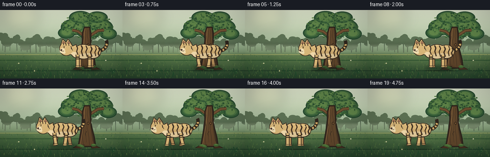
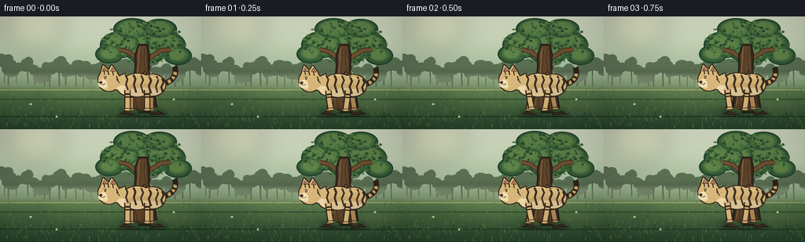

CODING AGENTS AS PIXEL WORLD MODELS
traex/DeepSeek-V4.1-Flash · instance_preservation_0055
点击播放 · 原生 RGB 像素
逐轮保存的候选
回放视频、检查图与代码变化。
每份候选均可单独播放。实际图片检查记录在下方工具轨迹中。
候选 01播放与检查图
点击播放 · 原生 RGB 像素

展开代码变化
--- 上一保存版本
+++ 本次保存版本
@@ -0,0 +1,576 @@
+from pathlib import Path
+import math
+
+import numpy as np
+from PIL import Image, ImageChops, ImageDraw, ImageFilter
+
+from artifact_io import save
+
+
+ROOT = Path(__file__).resolve().parent
+W, H = 256, 144
+N, FPS = 20, 4.0
+SS = 4
+SW, SH = W * SS, H * SS
+
+
+def c(rgb, a=255):
+ if len(rgb) == 4:
+ return tuple(int(round(v)) for v in rgb)
+ return tuple(int(round(v)) for v in rgb) + (int(round(a)),)
+
+
+def box(x0, y0, x1, y1):
+ return (round(x0 * SS), round(y0 * SS), round(x1 * SS), round(y1 * SS))
+
+
+def pt(x, y):
+ return (round(x * SS), round(y * SS))
+
+
+def line(draw, points, fill, width=1, joint="curve"):
+ draw.line([pt(x, y) for x, y in points], fill=fill, width=max(1, round(width * SS)), joint=joint)
+
+
+def ellipse(draw, x0, y0, x1, y1, fill=None, outline=None, width=1):
+ draw.ellipse(
+ box(x0, y0, x1, y1),
+ fill=fill,
+ outline=outline,
+ width=max(1, round(width * SS)) if outline else 0,
+ )
+
+
+def polygon(draw, points, fill=None, outline=None, width=1):
+ draw.polygon(
+ [pt(x, y) for x, y in points],
+ fill=fill,
+ outline=outline,
+ width=max(1, round(width * SS)) if outline else 0,
+ )
+
+
+def gradient_background():
+ stops = [
+ (0.00, (218, 226, 202)),
+ (0.26, (198, 213, 183)),
+ (0.47, (166, 190, 157)),
+ (0.61, (122, 151, 111)),
+ (0.66, (93, 125, 81)),
+ (0.73, (72, 106, 66)),
+ (1.00, (38, 67, 43)),
+ ]
+ yy = np.linspace(0.0, 1.0, SH, dtype=np.float32)
+ colors = np.empty((SH, 3), dtype=np.float32)
+ for i in range(len(stops) - 1):
+ a, ca = stops[i]
+ b, cb = stops[i + 1]
+ mask = (yy >= a) & (yy <= b)
+ t = (yy[mask] - a) / (b - a)
+ for channel in range(3):
+ colors[mask, channel] = ca[channel] + (cb[channel] - ca[channel]) * t
+ arr = np.broadcast_to(colors[:, None, :], (SH, SW, 3)).copy()
+
+ rng = np.random.default_rng(24)
+ grain = rng.normal(0, 1.55, (SH, SW, 1))
+ arr = np.clip(arr + grain, 0, 255).astype(np.uint8)
+ return Image.fromarray(arr).convert("RGBA")
+
+
+def draw_soft_glow(layer, cx, cy, rx, ry, color, blur):
+ glow = Image.new("RGBA", (SW, SH), (0, 0, 0, 0))
+ d = ImageDraw.Draw(glow)
+ d.ellipse(box(cx - rx, cy - ry, cx + rx, cy + ry), fill=color)
+ glow = glow.filter(ImageFilter.GaussianBlur(blur * SS))
+ layer.alpha_composite(glow)
+
+
+def draw_background():
+ image = gradient_background()
+ draw = ImageDraw.Draw(image)
+
+ draw_soft_glow(image, 43, 17, 39, 25, c((244, 232, 175), 44), 12)
+ draw_soft_glow(image, 109, 66, 82, 18, c((235, 231, 196), 26), 14)
+
+ # Distant woodland, kept low contrast to preserve depth.
+ rng = np.random.default_rng(81)
+ for i in range(27):
+ x = -8 + i * 10.5 + rng.uniform(-3.0, 3.0)
+ base_y = 87 + rng.uniform(-2.0, 3.0)
+ top_y = base_y - rng.uniform(18, 35)
+ trunk_col = c((75, 95, 72, rng.uniform(75, 120)))
+ line(draw, [(x, base_y), (x + rng.uniform(-1, 1), top_y)], trunk_col, rng.uniform(1.1, 2.0))
+ for _ in range(4):
+ cx = x + rng.uniform(-6, 6)
+ cy = top_y + rng.uniform(-1, 10)
+ rx = rng.uniform(5, 10)
+ ry = rng.uniform(4, 8)
+ ellipse(
+ draw,
+ cx - rx,
+ cy - ry,
+ cx + rx,
+ cy + ry,
+ c((91, 113, 84, rng.uniform(55, 90))),
+ )
+
+ # A soft mist band separates the woodland from the meadow.
+ mist = Image.new("RGBA", (SW, SH), (0, 0, 0, 0))
+ md = ImageDraw.Draw(mist)
+ md.rectangle(box(0, 72, W, 94), fill=c((196, 208, 176), 26))
+ image.alpha_composite(mist.filter(ImageFilter.GaussianBlur(3.2 * SS)))
+
+ # Meadow bands and dappled sunlight.
+ draw_soft_glow(image, 119, 102, 75, 20, c((183, 190, 116), 30), 12)
+ draw_soft_glow(image, 218, 112, 43, 15, c((220, 202, 126), 28), 10)
+ for x0, x1, y, color in [
+ (0, 256, 93, c((154, 164, 102), 32)),
+ (0, 256, 105, c((45, 81, 48), 25)),
+ (0, 256, 127, c((31, 58, 38), 38)),
+ ]:
+ draw.rectangle(box(x0, y, x1, y + 1.2), fill=color)
+
+ # Fine meadow texture.
+ rng = np.random.default_rng(132)
+ for _ in range(430):
+ x = rng.uniform(0, W)
+ y = rng.uniform(93, H)
+ depth = (y - 93) / (H - 93)
+ length = rng.uniform(1.0, 3.4) * (0.7 + depth)
+ lean = rng.uniform(-1.2, 1.2)
+ palette = [
+ c((73, 112, 57, rng.uniform(100, 190))),
+ c((111, 141, 72, rng.uniform(80, 150))),
+ c((47, 88, 49, rng.uniform(95, 175))),
+ ]
+ line(draw, [(x, y), (x + lean, y - length)], palette[rng.integers(0, 3)], 0.45)
+
+ # Tiny meadow flowers add scale without competing with the tiger.
+ for x, y, color in [
+ (39, 112, (233, 226, 177, 210)),
+ (72, 128, (221, 216, 161, 190)),
+ (221, 106, (231, 226, 189, 200)),
+ (238, 130, (218, 210, 151, 180)),
+ ]:
+ ellipse(draw, x - 1.2, y - 1.2, x + 1.2, y + 1.2, c(color))
+ line(draw, [(x, y), (x + 0.3, y + 2.7)], c((57, 92, 47, 170)), 0.45)
+
+ return image
+
+
+def draw_tree(image):
+ draw = ImageDraw.Draw(image)
+
+ # Layered canopy masses.
+ clusters = [
+ (183, 28, 35, 20),
+ (153, 36, 26, 17),
+ (209, 36, 27, 17),
+ (168, 16, 24, 14),
+ (203, 16, 22, 13),
+ (139, 48, 18, 12),
+ (226, 50, 18, 12),
+ (186, 48, 25, 12),
+ ]
+ for cx, cy, rx, ry in clusters:
+ ellipse(draw, cx - rx, cy - ry, cx + rx, cy + ry, c((34, 68, 45, 245)))
+ for cx, cy, rx, ry in clusters:
+ ellipse(draw, cx - rx + 2, cy - ry + 1.5, cx + rx - 1.5, cy + ry - 2, c((52, 91, 55, 245)))
+ ellipse(draw, cx - rx + 5, cy - ry + 2.5, cx + rx - 5, cy + ry - 5, c((74, 113, 66, 225)))
+ ellipse(draw, cx - rx + 8, cy - ry + 4, cx + rx - 9, cy + ry - 7, c((95, 132, 73, 170)))
+
+ rng = np.random.default_rng(412)
+ # Individual leaves give the canopy a crisp edge.
+ for _ in range(330):
+ angle = rng.uniform(0, math.tau)
+ radius = math.sqrt(rng.random())
+ cx = 183 + math.cos(angle) * 54 * radius
+ cy = 33 + math.sin(angle) * 27 * radius
+ if not (127 <= cx <= 239 and 2 <= cy <= 65):
+ continue
+ rx = rng.uniform(1.0, 2.4)
+ ry = rng.uniform(0.7, 1.8)
+ shade = int(rng.integers(0, 3))
+ colors = [(43, 79, 48), (65, 104, 58), (88, 127, 69)]
+ ellipse(draw, cx - rx, cy - ry, cx + rx, cy + ry, c(colors[shade], rng.uniform(145, 235)))
+ if rng.random() < 0.35:
+ line(
+ draw,
+ [(cx - rx * 0.6, cy + ry * 0.2), (cx + rx * 0.6, cy - ry * 0.5)],
+ c((31, 64, 40, 150)),
+ 0.35,
+ )
+
+ # Branches are visible between the canopy masses.
+ line(draw, [(180, 58), (163, 45), (151, 42)], c((73, 54, 37, 255)), 6.0)
+ line(draw, [(186, 55), (205, 43), (217, 42)], c((73, 54, 37, 255)), 6.5)
+ line(draw, [(180, 58), (163, 45), (151, 42)], c((112, 82, 50, 255)), 3.5)
+ line(draw, [(186, 55), (205, 43), (217, 42)], c((112, 82, 50, 255)), 4.0)
+
+ trunk = [
+ (176, 35),
+ (188, 35),
+ (191, 49),
+ (190, 68),
+ (193, 82),
+ (198, 102),
+ (201, 123),
+ (162, 123),
+ (166, 101),
+ (169, 82),
+ (171, 65),
+ (171, 48),
+ ]
+ polygon(draw, trunk, c((62, 45, 33, 255)), c((37, 31, 25, 255)), 1.5)
+ polygon(
+ draw,
+ [
+ (177, 38),
+ (186, 38),
+ (188, 51),
+ (187, 68),
+ (190, 83),
+ (194, 103),
+ (196, 120),
+ (167, 120),
+ (170, 101),
+ (173, 82),
+ (174, 65),
+ (174, 49),
+ ],
+ c((94, 69, 43, 255)),
+ )
+ # Warm lit edge.
+ line(draw, [(177, 39), (176, 54), (175, 70), (171, 96), (167, 118)], c((143, 108, 66, 170)), 1.1)
+ # Cool shadow edge.
+ line(draw, [(187, 39), (188, 58), (190, 78), (195, 102), (198, 120)], c((48, 41, 31, 210)), 1.3)
+
+ # Bark grooves and knots.
+ bark_lines = [
+ [(179, 43), (180, 54), (178, 66), (181, 79), (179, 94), (181, 113)],
+ [(184, 41), (183, 55), (185, 68), (183, 84), (186, 103), (187, 119)],
+ [(175, 55), (173, 68), (175, 84), (172, 101), (174, 117)],
+ [(191, 63), (189, 77), (191, 93), (194, 111)],
+ ]
+ for i, points in enumerate(bark_lines):
+ line(draw, points, c((61, 47, 33, 180)), 0.7 + (i % 2) * 0.35)
+ if i < 2:
+ line(draw, [(x + 0.8, y) for x, y in points], c((120, 86, 50, 105)), 0.45)
+
+ ellipse(draw, 181.5, 70, 186.5, 76, c((66, 47, 31, 255)), c((42, 34, 26, 255)), 0.7)
+ ellipse(draw, 183.0, 71.5, 185.3, 74.4, c((124, 87, 50, 150)))
+ line(draw, [(181, 90), (178, 95), (180, 101)], c((52, 41, 31, 180)), 0.7)
+
+ # Roots and moss anchor the tree.
+ polygon(draw, [(161, 119), (177, 118), (170, 126), (151, 125)], c((73, 51, 35, 255)), c((39, 33, 25, 255)), 1.0)
+ polygon(draw, [(190, 119), (201, 120), (211, 125), (191, 126)], c((70, 49, 34, 255)), c((39, 33, 25, 255)), 1.0)
+ for x0, y0, x1, y1 in [(160, 117, 172, 122), (190, 116, 201, 122), (166, 119, 176, 124)]:
+ ellipse(draw, x0, y0, x1, y1, c((65, 101, 51, 205)))
+ ellipse(draw, x0 + 2, y0 + 0.4, x1 - 2, y0 + 2.5, c((91, 127, 63, 170)))
+
+
+def bezier(p0, p1, p2, p3, steps=48):
+ result = []
+ for i in range(steps):
+ t = i / (steps - 1)
+ u = 1.0 - t
+ x = u**3 * p0[0] + 3 * u * u * t * p1[0] + 3 * u * t * t * p2[0] + t**3 * p3[0]
+ y = u**3 * p0[1] + 3 * u * u * t * p1[1] + 3 * u * t * t * p2[1] + t**3 * p3[1]
+ result.append((x, y))
+ return result
+
+
+def mask_outline(mask, color, width):
+ kernel = max(3, round(width * 2 * SS) + 1)
+ if kernel % 2 == 0:
+ kernel += 1
+ dilated = mask.filter(ImageFilter.MaxFilter(kernel))
+ edge = ImageChops.subtract(dilated, mask)
+ outline = Image.new("RGBA", (SW, SH), color)
+ outline.putalpha(edge)
+ return outline
+
+
+def draw_leg(layer, cx, base_y, hip_x, foot_dx, lift, color, far=False):
+ draw = ImageDraw.Draw(layer)
+ hip = (cx + hip_x, base_y - 26)
+ knee = (cx + hip_x + foot_dx * 0.42, base_y - 13 - lift * 0.32)
+ ankle = (cx + hip_x + foot_dx, base_y - 1.6 - lift)
+ outline = (52, 40, 30, 255) if not far else (45, 35, 28, 255)
+ line(draw, [hip, knee, ankle], outline, 8.2)
+ line(draw, [hip, knee, ankle], color, 5.4)
+ ellipse(draw, ankle[0] - 4.4, ankle[1] - 1.3, ankle[0] + 4.8, ankle[1] + 2.4, color, outline, 0.8)
+
+ # Two dark leg bands follow the upper limb.
+ vx, vy = knee[0] - hip[0], knee[1] - hip[1]
+ length = max(1.0, math.hypot(vx, vy))
+ nx, ny = -vy / length, vx / length
+ for t, band_w in [(0.38, 2.2), (0.67, 1.8)]:
+ px, py = hip[0] + vx * t, hip[1] + vy * t
+ line(draw, [(px - nx * 3.0, py - ny * 3.0), (px + nx * 3.0, py + ny * 3.0)], c((48, 37, 28, 235)), band_w)
+
+
+def draw_tail(layer, cx, base_y, phase):
+ sway = math.sin(phase - 0.5) * 2.2
+ points = bezier(
+ (cx + 31, base_y - 34),
+ (cx + 45, base_y - 32 + sway * 0.3),
+ (cx + 57, base_y - 43 + sway),
+ (cx + 52, base_y - 56 + sway * 0.55),
+ 56,
+ )
+ draw = ImageDraw.Draw(layer)
+ scaled = [pt(x, y) for x, y in points]
+ draw.line(scaled, fill=c((50, 39, 29, 255)), width=round(7.3 * SS), joint="curve")
+ draw.line(scaled, fill=c((207, 169, 103, 255)), width=round(4.6 * SS), joint="curve")
+
+ # Tail bands and a dark tip.
+ for start, end in [(0.26, 0.34), (0.45, 0.53), (0.63, 0.70)]:
+ i0, i1 = int(start * (len(points) - 1)), int(end * (len(points) - 1))
+ draw.line(
+ [pt(x, y) for x, y in points[i0 : i1 + 1]],
+ fill=c((50, 39, 29, 250)),
+ width=round(4.9 * SS),
+ joint="curve",
+ )
+ tip = points[int(0.80 * (len(points) - 1)) :]
+ draw.line([pt(x, y) for x, y in tip], fill=c((43, 35, 28, 255)), width=round(4.8 * SS), joint="curve")
+
+
+def draw_tiger(cx, base_y, phase):
+ layer = Image.new("RGBA", (SW, SH), (0, 0, 0, 0))
+ draw_tail(layer, cx, base_y, phase)
+
+ # Far-side legs sit behind the torso.
+ stride = 4.2 * math.sin(phase)
+ draw_leg(layer, cx, base_y, -3.5, -stride, max(0.0, -math.sin(phase)) * 1.6, c((178, 141, 89, 255)), True)
+ draw_leg(layer, cx, base_y, 22.0, stride, max(0.0, math.sin(phase)) * 1.6, c((176, 139, 88, 255)), True)
+
+ body_mask = Image.new("L", (SW, SH), 0)
+ md = ImageDraw.Draw(body_mask)
+ for shape in [
+ (-15, -47, 24, -18),
+ (7, -46, 40, -19),
+ (-21, -43, 3, -20),
+ ]:
+ md.ellipse(box(cx + shape[0], base_y + shape[1], cx + shape[2], base_y + shape[3]), fill=255)
+ md.polygon(
+ [
+ pt(cx - 22, base_y - 42),
+ pt(cx - 11, base_y - 47),
+ pt(cx - 13, base_y - 25),
+ pt(cx - 27, base_y - 28),
+ ],
+ fill=255,
+ )
+ md.ellipse(box(cx - 45, base_y - 52, cx - 18, base_y - 25), fill=255)
+ # Ears are part of the silhouette.
+ md.polygon(
+ [
+ pt(cx - 42, base_y - 47),
+ pt(cx - 39, base_y - 58),
+ pt(cx - 31, base_y - 50),
+ ],
+ fill=255,
+ )
+ md.polygon(
+ [
+ pt(cx - 33, base_y - 49),
+ pt(cx - 28, base_y - 58),
+ pt(cx - 21, base_y - 48),
+ ],
+ fill=255,
+ )
+
+ body = Image.new("RGBA", (SW, SH), c((216, 183, 122, 255)))
+ body.putalpha(body_mask)
+ layer.alpha_composite(body)
+
+ # Warm belly and chest.
+ pale = Image.new("RGBA", (SW, SH), (0, 0, 0, 0))
+ pd = ImageDraw.Draw(pale)
+ pd.ellipse(box(cx - 9, base_y - 29, cx + 35, base_y - 17), fill=c((240, 220, 172, 235)))
+ pd.ellipse(box(cx - 22, base_y - 32, cx - 8, base_y - 20), fill=c((242, 222, 178, 225)))
+ pale.putalpha(ImageChops.multiply(pale.getchannel("A"), body_mask))
+ layer.alpha_composite(pale)
+
+ # Broad side stripes, clipped precisely to the animal silhouette.
+ stripes = Image.new("RGBA", (SW, SH), (0, 0, 0, 0))
+ sd = ImageDraw.Draw(stripes)
+ stripe_paths = [
+ [(-11, -46), (-8, -40), (-10, -33), (-7, -25)],
+ [(-1, -47), (2, -40), (0, -33), (3, -23)],
+ [(9, -46), (12, -39), (9, -32), (12, -22)],
+ [(19, -45), (22, -38), (19, -31), (22, -22)],
+ [(29, -44), (31, -38), (28, -31), (30, -23)],
+ [(36, -41), (38, -36), (35, -30), (37, -24)],
+ ]
+ for i, path in enumerate(stripe_paths):
+ line(sd, [(cx + x, base_y + y) for x, y in path], c((48, 38, 29, 242)), 2.1 + (i % 2) * 0.35)
+ stripes.putalpha(ImageChops.multiply(stripes.getchannel("A"), body_mask))
+ layer.alpha_composite(stripes)
+
+ # Subtle top light and lower-body shading.
+ shade = Image.new("RGBA", (SW, SH), (0, 0, 0, 0))
+ shd = ImageDraw.Draw(shade)
+ shd.ellipse(box(cx - 13, base_y - 35, cx + 36, base_y - 16), fill=c((119, 79, 46, 35)))
+ shade.putalpha(ImageChops.multiply(shade.getchannel("A"), body_mask))
+ layer.alpha_composite(shade)
+
+ light = Image.new("RGBA", (SW, SH), (0, 0, 0, 0))
+ ld = ImageDraw.Draw(light)
+ ld.line(
+ [pt(cx - 14, base_y - 43), pt(cx - 3, base_y - 46), pt(cx + 14, base_y - 45), pt(cx + 31, base_y - 40)],
+ fill=c((246, 219, 160, 160)),
+ width=round(1.2 * SS),
+ joint="curve",
+ )
+ light.putalpha(ImageChops.multiply(light.getchannel("A"), body_mask))
+ layer.alpha_composite(light)
+
+ # Fine fur accents use a fixed seed so the identity stays stable.
+ fur = Image.new("RGBA", (SW, SH), (0, 0, 0, 0))
+ fd = ImageDraw.Draw(fur)
+ rng = np.random.default_rng(903)
+ for _ in range(85):
+ x = cx + rng.uniform(-16, 37)
+ y = base_y + rng.uniform(-44, -20)
+ length = rng.uniform(1.0, 2.6)
+ color = (104, 75, 45, int(rng.uniform(35, 90))) if rng.random() < 0.55 else (249, 225, 174, int(rng.uniform(30, 80)))
+ fd.line([pt(x, y), pt(x - length, y + rng.uniform(-0.4, 0.7))], fill=color, width=max(1, round(0.35 * SS)))
+ fur.putalpha(ImageChops.multiply(fur.getchannel("A"), body_mask))
+ layer.alpha_composite(fur)
+
+ # Clean silhouette edge over the fills.
+ layer.alpha_composite(mask_outline(body_mask, c((50, 39, 30, 255)), 1.05))
+
+ # Near-side legs.
+ draw_leg(layer, cx, base_y, -8.0, stride, max(0.0, math.sin(phase)) * 1.8, c((220, 185, 122, 255)))
+ draw_leg(layer, cx, base_y, 17.0, -stride, max(0.0, -math.sin(phase)) * 1.8, c((218, 183, 120, 255)))
+
+ # Ear interiors.
+ draw = ImageDraw.Draw(layer)
+ polygon(
+ draw,
+ [(cx - 40, base_y - 50), (cx - 38, base_y - 55), (cx - 33, base_y - 50)],
+ c((174, 118, 91, 255)),
+ c((64, 45, 35, 230)),
+ 0.55,
+ )
+ polygon(
+ draw,
+ [(cx - 30, base_y - 50), (cx - 27, base_y - 55), (cx - 23, base_y - 49)],
+ c((184, 126, 96, 255)),
+ c((64, 45, 35, 230)),
+ 0.55,
+ )
+
+ # Head markings.
+ for x0, x1, y0, y1, width in [
+ (-38, -37, -51, -46, 1.3),
+ (-33, -32, -51.5, -45.5, 1.4),
+ (-27, -26, -50.5, -45.0, 1.2),
+ (-22, -20, -44, -38, 1.3),
+ ]:
+ line(draw, [(cx + x0, base_y + y0), (cx + x1, base_y + y1)], c((51, 39, 30, 245)), width)
+ line(draw, [(cx - 22, base_y - 40), (cx - 18, base_y - 35)], c((51, 39, 30, 220)), 1.0)
+
+ # Muzzle, nose, eye, and mouth.
+ ellipse(draw, cx - 45.2, base_y - 39.5, cx - 34.0, base_y - 29.0, c((245, 226, 182, 255)))
+ ellipse(draw, cx - 38.7, base_y - 33.5, cx - 33.3, base_y - 28.0, c((244, 225, 181, 245)))
+ polygon(
+ draw,
+ [
+ (cx - 44.8, base_y - 36.1),
+ (cx - 41.2, base_y - 38.0),
+ (cx - 39.8, base_y - 35.5),
+ (cx - 42.1, base_y - 33.4),
+ ],
+ c((76, 52, 43, 255)),
+ c((45, 35, 28, 255)),
+ 0.45,
+ )
+ line(draw, [(cx - 42.0, base_y - 33.9), (cx - 39.0, base_y - 32.8), (cx - 36.2, base_y - 34.4)], c((73, 49, 39, 235)), 0.7)
+
+ # Eye socket and bright amber iris.
+ ellipse(draw, cx - 38.8, base_y - 44.0, cx - 33.3, base_y - 39.2, c((238, 219, 173, 255)))
+ ellipse(draw, cx - 37.7, base_y - 43.2, cx - 34.5, base_y - 39.9, c((61, 43, 29, 255)))
+ ellipse(draw, cx - 37.1, base_y - 42.6, cx - 35.0, base_y - 40.4, c((222, 160, 54, 255)))
+ ellipse(draw, cx - 36.5, base_y - 42.1, cx - 35.4, base_y - 40.9, c((24, 22, 18, 255)))
+ ellipse(draw, cx - 36.4, base_y - 42.1, cx - 35.8, base_y - 41.5, c((255, 244, 211, 255)))
+ line(draw, [(cx - 38.8, base_y - 44.0), (cx - 34.2, base_y - 43.2)], c((55, 42, 31, 225)), 0.65)
+
+ # Whiskers stay fine and low-contrast at final resolution.
+ for points in [
+ [(cx - 42, base_y - 34), (cx - 49, base_y - 35.2)],
+ [(cx - 42, base_y - 33), (cx - 49.5, base_y - 31.8)],
+ [(cx - 41, base_y - 32), (cx - 47.5, base_y - 29.5)],
+ ]:
+ line(draw, points, c((244, 230, 193, 170)), 0.4)
+
+ return layer
+
+
+def draw_foreground(image):
+ draw = ImageDraw.Draw(image)
+ rng = np.random.default_rng(620)
+ # A few foreground blades overlap the lower edge for depth.
+ for _ in range(42):
+ x = rng.uniform(0, W)
+ y = rng.uniform(128, 145)
+ length = rng.uniform(4, 11)
+ lean = rng.uniform(-3.5, 3.5)
+ color = c((31, 72, 43, rng.uniform(140, 225)))
+ line(draw, [(x, y), (x + lean * 0.45, y - length * 0.55), (x + lean, y - length)], color, rng.uniform(0.65, 1.25))
+
+
+def add_atmosphere(frame):
+ arr = np.asarray(frame, dtype=np.float32)
+ yy, xx = np.mgrid[0:H, 0:W]
+ vignette = 1.0 - 0.18 * (
+ ((xx - W * 0.5) / (W * 0.62)) ** 2 + ((yy - H * 0.48) / (H * 0.68)) ** 2
+ )
+ arr *= np.clip(vignette, 0.80, 1.0)[..., None]
+ # Warm sunlight from the upper-left.
+ warmth = np.clip((xx + yy * 0.45) / (W + H * 0.45), 0, 1)
+ arr[..., 0] += (1.0 - warmth) * 2.2
+ arr[..., 1] += (1.0 - warmth) * 1.1
+ return np.clip(arr, 0, 255).astype(np.uint8)
+
+
+def render_frame(index):
+ image = draw_background()
+ draw_tree(image)
+
+ u = index / (N - 1)
+ eased = 0.5 - 0.5 * math.cos(math.pi * u)
+ cx = 170.0 - 78.0 * eased
+ phase = index * math.tau / 8.0
+ bob = 0.55 * math.sin(phase * 2.0)
+ base_y = 120.0 + bob
+
+ # Contact shadow follows the body, not the individual legs.
+ shadow = Image.new("RGBA", (SW, SH), (0, 0, 0, 0))
+ sd = ImageDraw.Draw(shadow)
+ sd.ellipse(box(cx - 20, base_y - 2.0, cx + 42, base_y + 6.5), fill=c((20, 37, 27, 105)))
+ shadow = shadow.filter(ImageFilter.GaussianBlur(3.2 * SS))
+ image.alpha_composite(shadow)
+
+ tiger = draw_tiger(cx, base_y, phase)
+ image.alpha_composite(tiger)
+ draw_foreground(image)
+
+ final = image.convert("RGB").resize((W, H), Image.Resampling.LANCZOS)
+ return add_atmosphere(final)
+
+
+def main():
+ frames = np.stack([render_frame(i) for i in range(N)], axis=0)
+ assert frames.shape == (N, H, W, 3)
+ assert frames.dtype == np.uint8
+ save(frames, ROOT)
+ print(f"saved {len(frames)} RGB frames to {ROOT}")
+
+
+if __name__ == "__main__":
+ main()
候选 02播放与检查图
点击播放 · 原生 RGB 像素


展开代码变化
--- 上一保存版本
+++ 本次保存版本
@@ -98,7 +98,7 @@
x = -8 + i * 10.5 + rng.uniform(-3.0, 3.0)
base_y = 87 + rng.uniform(-2.0, 3.0)
top_y = base_y - rng.uniform(18, 35)
- trunk_col = c((75, 95, 72, rng.uniform(75, 120)))
+ trunk_col = c((88, 104, 80, rng.uniform(45, 78)))
line(draw, [(x, base_y), (x + rng.uniform(-1, 1), top_y)], trunk_col, rng.uniform(1.1, 2.0))
for _ in range(4):
cx = x + rng.uniform(-6, 6)
@@ -111,7 +111,7 @@
cy - ry,
cx + rx,
cy + ry,
- c((91, 113, 84, rng.uniform(55, 90))),
+ c((109, 126, 93, rng.uniform(32, 58))),
)
# A soft mist band separates the woodland from the meadow.
@@ -173,11 +173,11 @@
(186, 48, 25, 12),
]
for cx, cy, rx, ry in clusters:
- ellipse(draw, cx - rx, cy - ry, cx + rx, cy + ry, c((34, 68, 45, 245)))
+ ellipse(draw, cx - rx, cy - ry, cx + rx, cy + ry, c((39, 76, 50, 245)))
for cx, cy, rx, ry in clusters:
- ellipse(draw, cx - rx + 2, cy - ry + 1.5, cx + rx - 1.5, cy + ry - 2, c((52, 91, 55, 245)))
- ellipse(draw, cx - rx + 5, cy - ry + 2.5, cx + rx - 5, cy + ry - 5, c((74, 113, 66, 225)))
- ellipse(draw, cx - rx + 8, cy - ry + 4, cx + rx - 9, cy + ry - 7, c((95, 132, 73, 170)))
+ ellipse(draw, cx - rx + 2, cy - ry + 1.5, cx + rx - 1.5, cy + ry - 2, c((58, 98, 60, 245)))
+ ellipse(draw, cx - rx + 5, cy - ry + 2.5, cx + rx - 5, cy + ry - 5, c((82, 121, 69, 225)))
+ ellipse(draw, cx - rx + 8, cy - ry + 4, cx + rx - 9, cy + ry - 7, c((104, 141, 78, 170)))
rng = np.random.default_rng(412)
# Individual leaves give the canopy a crisp edge.
@@ -191,7 +191,7 @@
rx = rng.uniform(1.0, 2.4)
ry = rng.uniform(0.7, 1.8)
shade = int(rng.integers(0, 3))
- colors = [(43, 79, 48), (65, 104, 58), (88, 127, 69)]
+ colors = [(49, 87, 52), (71, 112, 62), (96, 136, 73)]
ellipse(draw, cx - rx, cy - ry, cx + rx, cy + ry, c(colors[shade], rng.uniform(145, 235)))
if rng.random() < 0.35:
line(
@@ -406,7 +406,7 @@
[(36, -41), (38, -36), (35, -30), (37, -24)],
]
for i, path in enumerate(stripe_paths):
- line(sd, [(cx + x, base_y + y) for x, y in path], c((48, 38, 29, 242)), 2.1 + (i % 2) * 0.35)
+ line(sd, [(cx + x, base_y + y) for x, y in path], c((43, 33, 24, 248)), 2.35 + (i % 2) * 0.4)
stripes.putalpha(ImageChops.multiply(stripes.getchannel("A"), body_mask))
layer.alpha_composite(stripes)
@@ -472,12 +472,12 @@
(-27, -26, -50.5, -45.0, 1.2),
(-22, -20, -44, -38, 1.3),
]:
- line(draw, [(cx + x0, base_y + y0), (cx + x1, base_y + y1)], c((51, 39, 30, 245)), width)
- line(draw, [(cx - 22, base_y - 40), (cx - 18, base_y - 35)], c((51, 39, 30, 220)), 1.0)
+ line(draw, [(cx + x0, base_y + y0), (cx + x1, base_y + y1)], c((44, 33, 24, 245)), width)
+ line(draw, [(cx - 22, base_y - 40), (cx - 18, base_y - 35)], c((44, 33, 24, 220)), 1.0)
# Muzzle, nose, eye, and mouth.
- ellipse(draw, cx - 45.2, base_y - 39.5, cx - 34.0, base_y - 29.0, c((245, 226, 182, 255)))
- ellipse(draw, cx - 38.7, base_y - 33.5, cx - 33.3, base_y - 28.0, c((244, 225, 181, 245)))
+ ellipse(draw, cx - 45.2, base_y - 39.5, cx - 34.0, base_y - 29.0, c((250, 235, 195, 255)))
+ ellipse(draw, cx - 38.7, base_y - 33.5, cx - 33.3, base_y - 28.0, c((249, 234, 194, 245)))
polygon(
draw,
[
@@ -493,11 +493,11 @@
line(draw, [(cx - 42.0, base_y - 33.9), (cx - 39.0, base_y - 32.8), (cx - 36.2, base_y - 34.4)], c((73, 49, 39, 235)), 0.7)
# Eye socket and bright amber iris.
- ellipse(draw, cx - 38.8, base_y - 44.0, cx - 33.3, base_y - 39.2, c((238, 219, 173, 255)))
- ellipse(draw, cx - 37.7, base_y - 43.2, cx - 34.5, base_y - 39.9, c((61, 43, 29, 255)))
- ellipse(draw, cx - 37.1, base_y - 42.6, cx - 35.0, base_y - 40.4, c((222, 160, 54, 255)))
- ellipse(draw, cx - 36.5, base_y - 42.1, cx - 35.4, base_y - 40.9, c((24, 22, 18, 255)))
- ellipse(draw, cx - 36.4, base_y - 42.1, cx - 35.8, base_y - 41.5, c((255, 244, 211, 255)))
+ ellipse(draw, cx - 39.4, base_y - 44.5, cx - 32.6, base_y - 38.7, c((252, 238, 201, 255)))
+ ellipse(draw, cx - 38.1, base_y - 43.5, cx - 34.0, base_y - 39.5, c((43, 32, 23, 255)))
+ ellipse(draw, cx - 37.3, base_y - 42.8, cx - 34.6, base_y - 40.1, c((236, 169, 54, 255)))
+ ellipse(draw, cx - 36.6, base_y - 42.1, cx - 35.3, base_y - 40.7, c((20, 19, 16, 255)))
+ ellipse(draw, cx - 36.5, base_y - 42.0, cx - 35.8, base_y - 41.3, c((255, 246, 216, 255)))
line(draw, [(cx - 38.8, base_y - 44.0), (cx - 34.2, base_y - 43.2)], c((55, 42, 31, 225)), 0.65)
# Whiskers stay fine and low-contrast at final resolution.
@@ -506,7 +506,7 @@
[(cx - 42, base_y - 33), (cx - 49.5, base_y - 31.8)],
[(cx - 41, base_y - 32), (cx - 47.5, base_y - 29.5)],
]:
- line(draw, points, c((244, 230, 193, 170)), 0.4)
+ line(draw, points, c((255, 243, 207, 210)), 0.5)
return layer
候选 03播放与检查图
可观测工具轨迹
实际执行的命令与返回图片。
命令 1exit 0
/bin/bash -c "pwd && rg --files -g 'prompt.txt' -g 'GENERATION_RULES.md' -g 'task_spec.json' -g '"'!node_modules'"'"
命令 2exit 0
/bin/bash -c "find . -maxdepth 2 -type f -printf '%p\\n' | sort | head -200"
命令 3exit 0
/bin/bash -c 'git status --short --branch'
命令 4exit 0
/bin/bash -c 'cat prompt.txt'
命令 5exit 0
/bin/bash -c 'cat GENERATION_RULES.md'
命令 6exit 0
/bin/bash -c 'cat task_spec.json'
命令 7exit 0
/bin/bash -c "sed -n '1,240p' artifact_io.py"
命令 8exit 0
/bin/bash -c "sed -n '1,240p' player_template.html"
命令 9exit 0
/bin/bash -c "python - <<'PY' import importlib.util for m in ['numpy','PIL','cv2','imageio','scipy']: print(m, bool(importlib.util.find_spec(m))) PY"
命令 10exit 0
/bin/bash -c "python - <<'PY' from PIL import Image import PIL print(PIL.__version__) PY"
命令 11exit 1
/bin/bash -c 'python generate.py'
命令 12exit 0
/bin/bash -c "rg -n \"c\\(\\(["'^'"\\)]*,["'^'"\\)]*,["'^'"\\)]*,["'^'"\\)]*\\)\\)\" generate.py"
命令 13exit 1
/bin/bash -c 'python generate.py'
命令 14exit 0
/bin/bash -c 'python generate.py'
命令 15exit 0
/bin/bash -c "python - <<'PY'
from PIL import Image
im=Image.open('inspection.png')
print(im.size)
im.resize((1536, im.height*2)).save('.tmp/inspection_large.png')
PY"命令 16exit 0
/bin/bash -c 'command -v chafa || true; command -v viu || true; command -v jp2 || true; command -v img2txt || true'
命令 17exit 0
/bin/bash -c 'ls -lh frames/*.png pixels.npz index.html inspection.png transition_check.png'
命令 18exit 0
/bin/bash -c "python - <<'PY' from PIL import Image import numpy as np for name in ['frames/00.png','frames/05.png','frames/10.png','frames/15.png','frames/19.png']: a=np.asarray(Image.open(name)) print(name, a.shape, a.min(), a.max(), tuple(a.reshape(-1,3).mean(0).round(1))) PY"
命令 19exit 0
/bin/bash -c "python - <<'PY'
from PIL import Image
import numpy as np
for fi in [0,5,10,15,19]:
a=np.asarray(Image.open(f'frames/{fi:02d}.png')).astype(int)
# warm/beige tiger: high red, red over blue, brighter than shadowed bark
m=(a[:,:,0]>125)&(a[:,:,0]>a[:,:,1]+12)&(a[:,:,1]>a[:,:,2]+18)
ys,xs=np.where(m)
print(fi, (xs.min(),ys.min(),xs.max(),ys.max()), len(xs))
PY"命令 20exit 0
/bin/bash -c "python - <<'PY'
from PIL import Image
im=Image.open('frames/00.png')
# print ANSI truecolor half blocks for a compact visual check
im=im.resize((128,72))
a=im.load()
for y in range(0,72,2):
row=[]
for x in range(128):
r1,g1,b1=a[x,y]; r2,g2,b2=a[x,min(y+1,71)]
row.append(f'\\x1b[38;2;{r1};{g1};{b1}m\\x1b[48;2;{r2};{g2};{b2}mâ')
print(''.join(row)+'\\x1b[0m')
PY"命令 21exit 0
/bin/bash -c "python - <<'PY'
from PIL import Image
import numpy as np
for fi in [0,19]:
a=np.asarray(Image.open(f'frames/{fi:02d}.png')).astype(int)
# crop image to 2x1 cells, classify broad palette
h,w,_=a.shape
out=[]
for y in range(0,h,4):
row=''
for x in range(0,w,4):
p=a[y:y+4,x:x+4].mean((0,1)); r,g,b=p
if r>145 and g>115 and b<150 and r>g+8: ch='T' # tiger/beige
elif r>80 and r>g*1.15 and r>b*1.25: ch='t' # trunk warm brown
elif r<60 and g<90: ch='#' # dark foliage
elif g>r+12 and g>b+5: ch='g' # green
elif r>175 and g>180 and b>145: ch='.' # sky/meadow light
else: ch=' '
row+=ch
out.append(row)
print('\\nFRAME',fi)
print('\\n'.join(out))
PY"命令 22exit 0
/bin/bash -c "python - <<'PY'
from PIL import Image
import numpy as np
im=np.asarray(Image.open('frames/00.png')).astype(int)
# Tiger crop, 2x2 blocks. Legend: B beige, W cream, S stripe/dark fur, O outline, R trunk, G green
chars=[]
for y in range(56,130,2):
row=''
for x in range(112,226,2):
p=im[y:y+2,x:x+2].mean((0,1)); r,g,b=p
if r>205 and g>185 and b>135: ch='W'
elif r>140 and r>g+8 and g>b+14: ch='B'
elif r<78 and g<75 and b<65: ch='O'
elif r<105 and g<95 and b<80: ch='S'
elif r>80 and r>g*1.15 and r>b*1.2: ch='R'
elif g>=r-3 and g>b+3: ch='G'
elif r<120: ch='s'
else: ch='.'
row+=ch
chars.append(row)
print('\\n'.join(chars))
PY"命令 23exit 0
/bin/bash -c "python - <<'PY'
from PIL import Image
import numpy as np
for fi in range(20):
a=np.asarray(Image.open(f'frames/{fi:02d}.png')).astype(np.int16)
print(fi, tuple(a[120,110].tolist()), tuple(a[110,175].tolist()))
PY"命令 24exit 0
/bin/bash -c "python - <<'PY'
from PIL import Image
import numpy as np
# Tiger crop at frame 19, nearest enlargement only
im=Image.open('frames/19.png').crop((25,57,135,133))
im.resize((660,456),Image.Resampling.NEAREST).save('.tmp/tiger_end_nearest.png')
# Simple stats for stripes inside tiger bbox
a=np.asarray(im).astype(int)
dark=(a[:,:,0]<100)&(a[:,:,1]<80)&(a[:,:,2]<65)
print('crop dark pixels', dark.sum(), 'of', dark.size)
PY"命令 25exit 0
/bin/bash -c "python - <<'PY'
from PIL import Image, ImageChops
import numpy as np
base=np.asarray(Image.open('frames/00.png')).astype(int)
for i in range(1,20):
a=np.asarray(Image.open(f'frames/{i:02d}.png')).astype(int)
d=np.abs(a-base).sum(2)>30
ys,xs=np.where(d)
# only tiger area approximate and ignore ground texture/trunk
m=(ys>55)&(ys<133)&(xs>20)&(xs<225)
print(i, int(m.sum()), (int(xs[m].min()),int(ys[m].min()),int(xs[m].max()),int(ys[m].max())) if m.any() else None)
PY"命令 26exit 0
/bin/bash -c "sed -n '88,185p' generate.py"
命令 27exit 0
/bin/bash -c "sed -n '185,215p' generate.py"
命令 28exit 0
/bin/bash -c "sed -n '450,515p' generate.py"
命令 29exit 0
/bin/bash -c "rg -n \"2\\.1 \\+|mask_outline|line\\(sd\" generate.py"
命令 30exit 0
/bin/bash -c 'python generate.py'
命令 31exit 0
/bin/bash -c "python - <<'PY'
from PIL import Image
import numpy as np
for fi in [0,5,10,15,19]:
a=np.asarray(Image.open(f'frames/{fi:02d}.png')).astype(int)
# tiger color extent only in scene region; exclude sky and trunk
m=(a[:,:,0]>135)&(a[:,:,0]>a[:,:,1]+10)&(a[:,:,1]>a[:,:,2]+15)&(np.indices(a.shape[:2])[0]>55)
ys,xs=np.where(m)
print(fi, 'tiger-ish', len(xs), 'bbox', (int(xs.min()),int(ys.min()),int(xs.max()),int(ys.max())))
PY"命令 32exit 0
/bin/bash -c "python - <<'PY'
from PIL import Image
import numpy as np
im=np.asarray(Image.open('frames/19.png')).astype(int)
for y in range(58,128,2):
row=''
for x in range(38,151,2):
p=im[y:y+2,x:x+2].mean((0,1)); r,g,b=p
if r>205 and g>185 and b>135: ch='W'
elif r>145 and r>g+8 and g>b+14: ch='B'
elif r<78 and g<75 and b<65: ch='O'
elif r<108 and g<95 and b<80: ch='S'
elif r>80 and r>g*1.15 and r>b*1.2: ch='R'
elif g>=r-3 and g>b+3: ch='G'
elif r<120: ch='s'
else: ch='.'
row+=ch
print(row)
PY"命令 33exit 0
/bin/bash -c "python - <<'PY'
from pathlib import Path
import json, re, base64
import numpy as np
from PIL import Image
root = Path('.')
spec = json.loads((root/'task_spec.json').read_text())
frames = [np.asarray(Image.open(root/'frames'/f'{i:02d}.png')) for i in range(spec['frames'])]
assert len(frames) == 20
assert all(a.shape == (144, 256, 3) and a.dtype == np.uint8 for a in frames)
packed = np.load(root/'pixels.npz')['pixels']
assert packed.shape == (144, 256, 20)
reconstructed = np.stack([
np.stack([(packed[..., i] >> 16) & 255, (packed[..., i] >> 8) & 255, packed[..., i] & 255], axis=-1)
for i in range(20)
])
assert np.array_equal(reconstructed, np.stack(frames))
assert len({a.tobytes() for a in frames}) == 20
html = (root/'index.html').read_text()
assert '__DATA__' not in html and '__ID__' not in html
match = re.search(r\"const DATA=(\\{.*?\\}),W=DATA\\.width\", html)
assert match
payload = json.loads(match.group(1))
assert payload['frames'] == 20 and payload['fps'] == 4.0 and payload['width'] == 256 and payload['height'] == 144
assert len(payload['deltas']) == 19
first = np.frombuffer(base64.b64decode(payload['first']), dtype='<u4').reshape(144, 256)
assert np.array_equal(first, packed[..., 0])
# Fixed scene check away from tiger and frame-to-frame subject movement.
static_bg = np.abs(frames[0][10:55, 0:120].astype(int) - frames[-1][10:55, 0:120].astype(int)).mean()
print('validated frames:', len(frames))
print('static background mean delta:', round(float(static_bg), 4))
print('player deltas:', len(payload['deltas']))
print('artifact sizes:', {p.name: p.stat().st_size for p in [root/'pixels.npz', root/'index.html', root/'inspection.png']})
PY"命令 34exit 0
/bin/bash -c "python - <<'PY'
from PIL import Image
import numpy as np
# Detect beige tiger extent in each frame, excluding trunk by x>205 late only where needed.
for i in range(20):
a=np.asarray(Image.open(f'frames/{i:02d}.png')).astype(int)
yy=np.indices(a.shape[:2])[0]
m=(a[:,:,0]>135)&(a[:,:,0]>a[:,:,1]+10)&(a[:,:,1]>a[:,:,2]+15)&(yy>55)&(yy<132)
ys,xs=np.where(m)
# trunk is a narrow stationary component; report quantiles for robustness
print(f'{i:02d}: x05={np.quantile(xs,0.05):.1f} x95={np.quantile(xs,0.95):.1f} n={len(xs)}')
PY"命令 35exit 0
/bin/bash -c 'git status --short -- generate.py frames pixels.npz index.html inspection.png transition_check.png'
命令 36exit 0
/bin/bash -c 'git status --short --untracked-files=all | head -80'
命令 37exit 1
/bin/bash -c 'before=$(sha256sum pixels.npz | cut -d'"' ' -f1); python generate.py >/tmp/pixelworld_regen.log; after="'$(sha256sum pixels.npz | cut -d'"' ' -f1); printf 'before=%s\\nafter=%s\\n' \""'$before" "$after"; test "$before" = "$after"; cat /tmp/pixelworld_regen.log'
命令 38exit 0
/bin/bash -c 'before=$(sha256sum pixels.npz | cut -d'"' ' -f1); python generate.py > .tmp/pixelworld_regen.log; after="'$(sha256sum pixels.npz | cut -d'"' ' -f1); printf 'before=%s\\nafter=%s\\n' \""'$before" "$after"; test "$before" = "$after"; cat .tmp/pixelworld_regen.log'
命令 39exit 0
/bin/bash -c "python - <<'PY'
from PIL import Image
import numpy as np
for i in [0,19]:
a=np.asarray(Image.open(f'frames/{i:02d}.png')).astype(float)
print(i, 'mean', a.mean((0,1)).round(1), 'std', a.std((0,1)).round(1), 'unique colors', len(np.unique(a.reshape(-1,3),axis=0)))
PY"命令 40exit 0
/bin/bash -c "find . -maxdepth 2 -type f -printf '%p %s bytes\\n' | sort"
保存候选 3 份；完成命令 40 次；可验证图片返回 0 张。原始 API 响应与完整日志保留在本地。